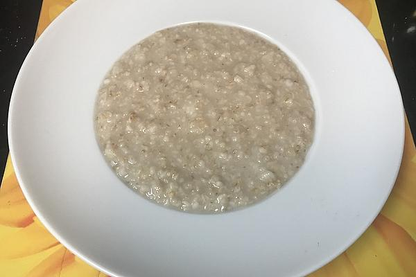

Gruel. A Workhouse food that consists of Oatmeal, Water and a little Salt.

Gruel is a simple and often plain porridge made from cereal grains (like oats or rice) or legumes, cooked in water or milk. It's humble, budget-friendly, and has a thick, comforting consistency.
Ingredients
3 dessert spoonfuls of oatmeal
1 pint of water
a little salt
How to Prepare
- Mix the oatmeal with a little cold water to make a paste
- Put the rest of the water in a pan
- Add the mixture and boil for 10 minutes
- Add the salt
Return to the Recipe Homepage.